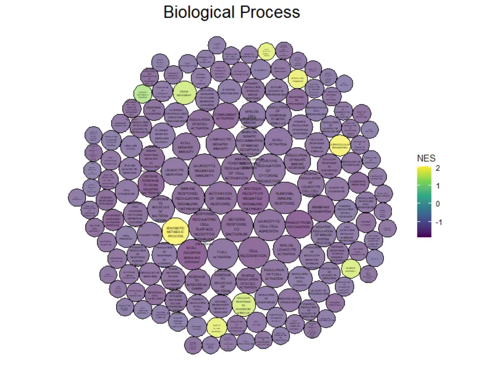
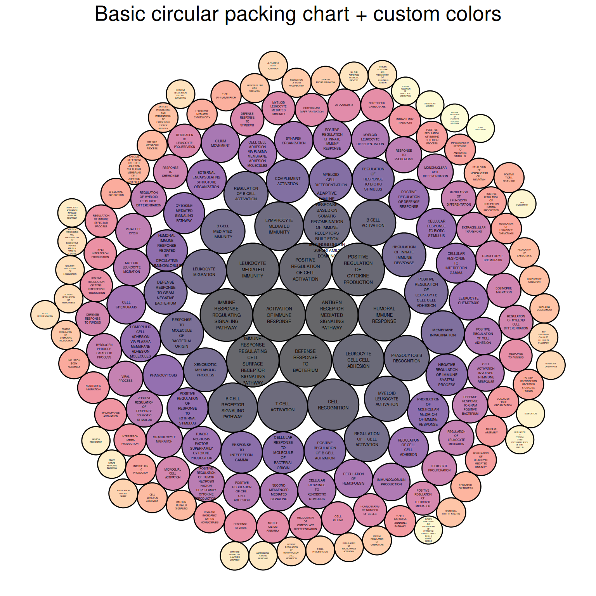
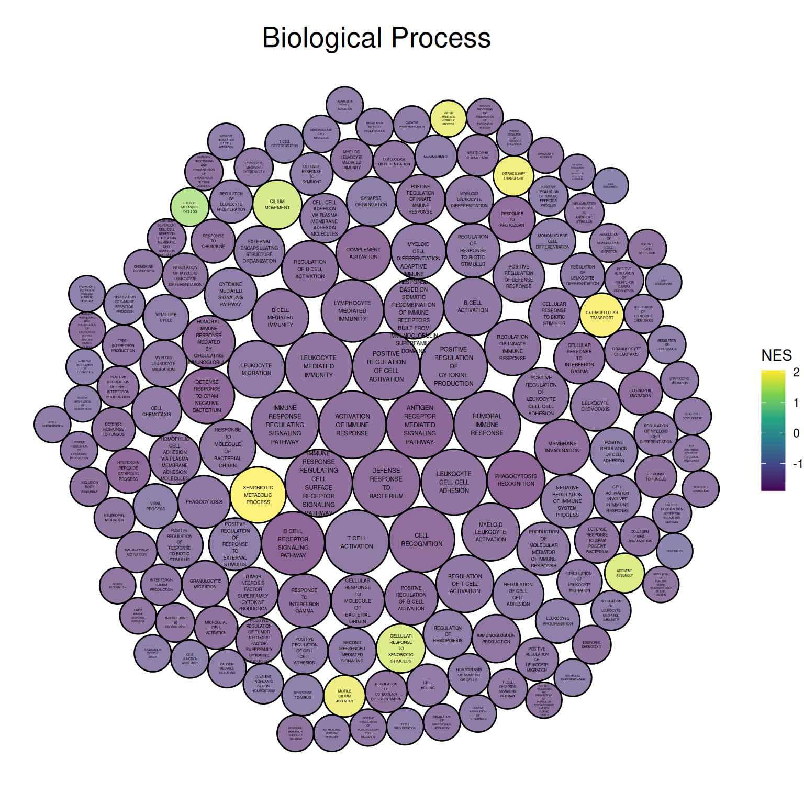
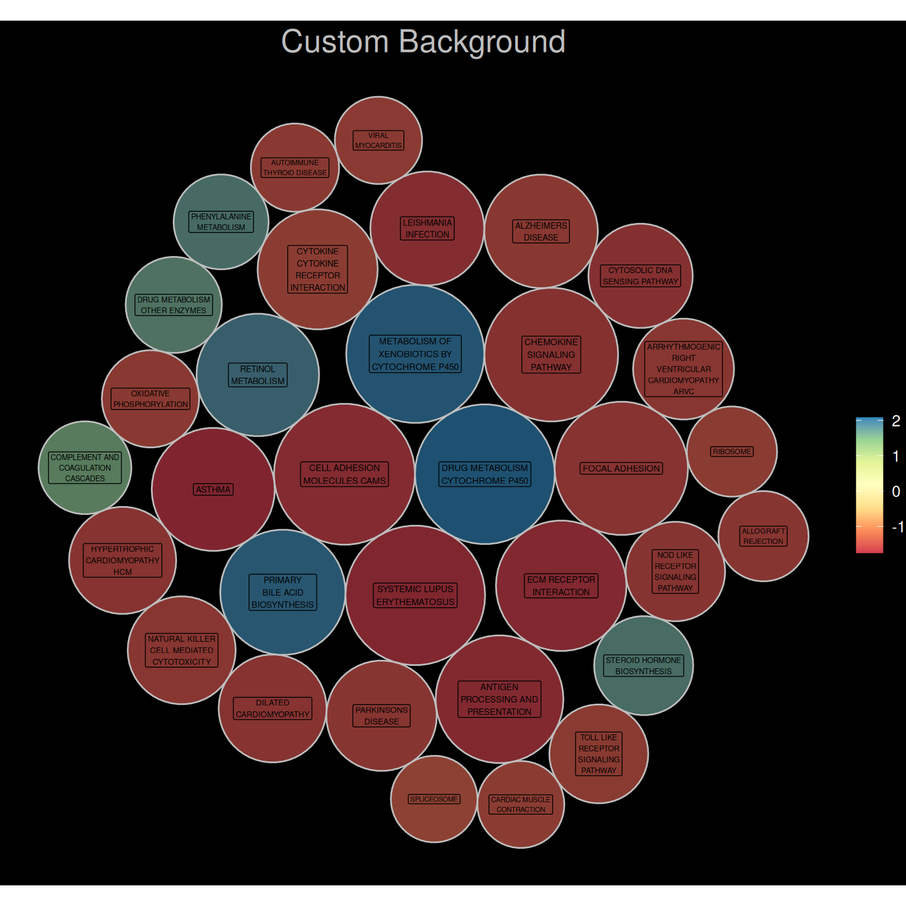
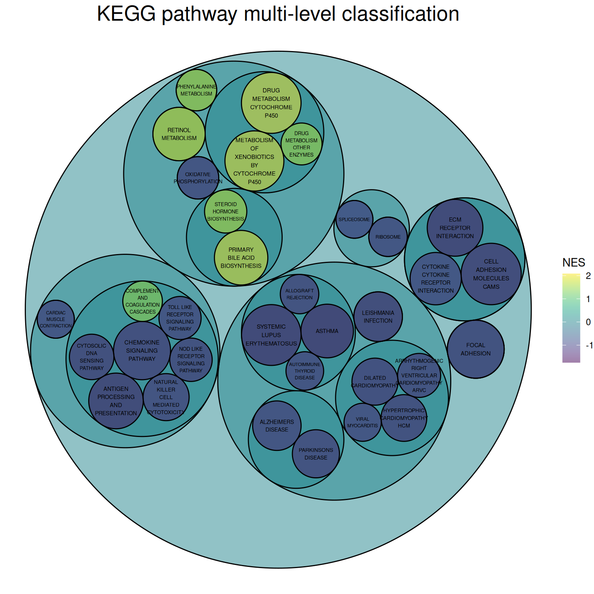
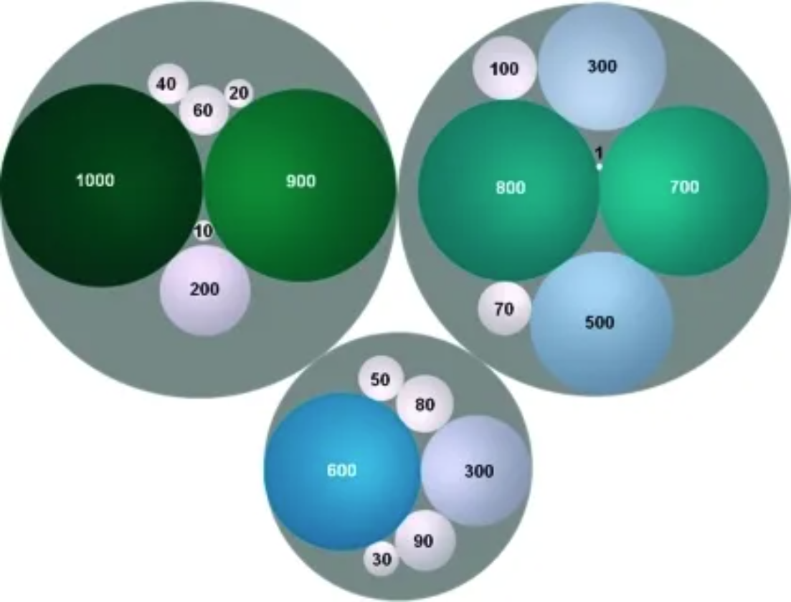

# 安装包
if (!requireNamespace("packcircles", quietly = TRUE)) {
install.packages("packcircles")
}
if (!requireNamespace("ggplot2", quietly = TRUE)) {
install.packages("ggplot2")
}
if (!requireNamespace("dplyr", quietly = TRUE)) {
install.packages("dplyr")
}
if (!requireNamespace("viridis", quietly = TRUE)) {
install.packages("viridis")
}
if (!requireNamespace("ggiraph", quietly = TRUE)) {
install.packages("ggiraph")
}
if (!requireNamespace("htmlwidgets", quietly = TRUE)) {
install.packages("htmlwidgets")
}
if (!requireNamespace("ggraph", quietly = TRUE)) {
install.packages("ggraph")
}
if (!requireNamespace("igraph", quietly = TRUE)) {
install.packages("igraph")
}
if (!requireNamespace("tidyverse", quietly = TRUE)) {
install.packages("tidyverse")
}
if (!requireNamespace("flare", quietly = TRUE)) {
install.packages("flare")
}
if (!requireNamespace("cowplot", quietly = TRUE)) {
install.packages("cowplot")
}
if (!requireNamespace("circlepackeR", quietly = TRUE)) {
remotes::install_github("jeromefroe/circlepackeR")
}
if (!requireNamespace("data.tree", quietly = TRUE)) {
install.packages("data.tree")
}
# 加载包
library(packcircles)
library(ggplot2)
library(dplyr)
library(tidyr)
library(viridis)
library(ggiraph)
library(htmlwidgets)
library(ggraph)
library(igraph)
library(tidyverse)
library(flare)
library(cowplot)
library(circlepackeR)
library(data.tree)包珠图
包珠图（Circular Packing），可视为一种特殊的分类树状图，特别适合展示具有层级关系的分类数据。
示例

环境配置
系统要求： 跨平台（Linux/MacOS/Windows）
编程语言：R
依赖包：
packcircles;ggplot2;dplyr;tidyr;viridis;ggiraph;ggiraph;htmlwidgets;ggraph;igraph;tidyverse;flare;cowplot;circlepackeR;data.tree
sessioninfo::session_info("attached")─ Session info ───────────────────────────────────────────────────────────────
setting value
version R version 4.6.0 (2026-04-24)
os Ubuntu 24.04.4 LTS
system x86_64, linux-gnu
ui X11
language (EN)
collate C.UTF-8
ctype C.UTF-8
tz UTC
date 2026-05-09
pandoc 3.1.3 @ /usr/bin/ (via rmarkdown)
quarto 1.9.37 @ /usr/local/bin/quarto
─ Packages ───────────────────────────────────────────────────────────────────
package * version date (UTC) lib source
circlepackeR * 0.0.0.9000 2026-05-04 [1] Github (jeromefroe/circlepackeR@f0a84d5)
cowplot * 1.2.0 2025-07-07 [1] RSPM
data.tree * 1.2.0 2025-08-25 [1] RSPM
dplyr * 1.2.1 2026-04-03 [1] RSPM
flare * 1.8 2026-02-19 [1] RSPM
forcats * 1.0.1 2025-09-25 [1] RSPM
ggiraph * 0.9.6 2026-02-21 [1] RSPM
ggplot2 * 4.0.3.9000 2026-05-04 [1] Github (tidyverse/ggplot2@6870419)
ggraph * 2.2.2 2025-08-24 [1] RSPM
htmlwidgets * 1.6.4 2023-12-06 [1] RSPM
igraph * 2.3.1 2026-05-04 [1] RSPM
lattice * 0.22-9 2026-02-09 [3] CRAN (R 4.6.0)
lubridate * 1.9.5 2026-02-04 [1] RSPM
MASS * 7.3-65 2025-02-28 [3] CRAN (R 4.6.0)
Matrix * 1.7-5 2026-03-21 [3] CRAN (R 4.6.0)
packcircles * 0.3.7 2024-11-21 [1] RSPM
purrr * 1.2.2 2026-04-10 [1] RSPM
readr * 2.2.0 2026-02-19 [1] RSPM
stringr * 1.6.0 2025-11-04 [1] RSPM
tibble * 3.3.1 2026-01-11 [1] RSPM
tidyr * 1.3.2 2025-12-19 [1] RSPM
tidyverse * 2.0.0 2023-02-22 [1] RSPM
viridis * 0.6.5 2024-01-29 [1] RSPM
viridisLite * 0.4.3 2026-02-04 [1] RSPM
[1] /home/runner/work/_temp/Library
[2] /opt/R/4.6.0/lib/R/site-library
[3] /opt/R/4.6.0/lib/R/library
* ── Packages attached to the search path.
──────────────────────────────────────────────────────────────────────────────数据准备
#GO BP
data_BP <- readr::read_csv("https://bizard-1301043367.cos.ap-guangzhou.myqcloud.com/data_BP.csv")
#flare
data_edges <- flare$edges
data_vertices <- flare$vertices
#KEGG
data_KEGG <- readr::read_csv("https://bizard-1301043367.cos.ap-guangzhou.myqcloud.com/data_KEGG.csv")
#KEGG_type
data_KEGG_type <- readr::read_csv("https://bizard-1301043367.cos.ap-guangzhou.myqcloud.com/data_KEGG_type.csv")
data_KEGG_type$pvalue_log <- -log10(data_KEGG_type$pvalue)
summary(data_KEGG_type) PW ID pvalue NES
Length :33 Length :33 Min. :3.490e-06 Min. :-1.7497
N.unique :33 N.unique :33 1st Qu.:4.930e-05 1st Qu.:-1.5834
N.blank : 0 N.blank : 0 Median :6.342e-04 Median :-1.5103
Min.nchar: 6 Min.nchar:11 Mean :2.093e-03 Mean :-0.7439
Max.nchar:52 Max.nchar:57 3rd Qu.:2.889e-03 3rd Qu.:-1.3939
Max. :8.710e-03 Max. : 2.0829
type subtype pvalue_log
Length :33 Length :33 Min. :2.060
N.unique : 6 N.unique :15 1st Qu.:2.539
N.blank : 0 N.blank : 0 Median :3.198
Min.nchar:10 Min.nchar:11 Mean :3.442
Max.nchar:36 Max.nchar:41 3rd Qu.:4.307
Max. :5.457 data_KEGG_type1 <- data_KEGG_type %>%
dplyr::select(type, subtype, PW, pvalue_log, NES) %>%
arrange(type, subtype)可视化
1. 单级包珠图
1.1 基础包珠图
以小鼠肺组织使用顺铂前后的差异基因对应的GO分析结果数据为例。
##颜色
data_BP1 <- data_BP
data_BP1$pvalue_log <- -log10(data_BP1$pvalue)
packing_BP <- circleProgressiveLayout(data_BP1$pvalue_log, sizetype='area' )
#合并绘图数据
data_BUBBLE_BP <- cbind(data_BP1, packing_BP)
#生成圆的各个顶点坐标，npoint为顶点数
dat.gg_BP <- circleLayoutVertices(packing_BP, npoints=50)
#绘图
p <- ggplot() +
geom_polygon(data = dat.gg_BP,
aes(x, y, group = id, fill=as.factor(id)),
colour = "black", alpha = 0.6) +
scale_fill_manual(values = magma(nrow(data_BUBBLE_BP))) + #修改颜色
geom_text(data = data_BUBBLE_BP,
aes(x, y, size=pvalue_log, label = str_wrap(BP,width = 10)),
show.legend = FALSE) +
scale_size_continuous(range = c(0.5,1.5)) +
theme_void() +
theme(legend.position="none",
plot.title = element_text(hjust=0.5,size = 20)) +
coord_equal() +
ggtitle("基础包珠图+颜色自定义")
p
上图展示了小鼠肺组织使用顺铂前后的差异基因GO分析的Biological Process部分，颜色表示不同的生物过程。
1.2 颜色映射数据大小
以小鼠肺组织使用顺铂前后的差异基因对应的GO分析结果数据为例。
#基础包珠图（ggplot2）----
#绘图----
#返回每个泡泡位置和大小
data_BP1 <- data_BP
data_BP1$pvalue_log <- -log10(data_BP1$pvalue)
packing_BP <- circleProgressiveLayout(data_BP1$pvalue_log, sizetype='area' )
#合并绘图数据
data_BUBBLE_BP <- cbind(data_BP1, packing_BP)
#生成圆的各个顶点坐标，npoint为顶点数
dat.gg_BP <- circleLayoutVertices(packing_BP, npoints=50)
#value映射NES值
dat.gg_BP$NES <- rep(data_BP1$NES, each=51)
#绘图
ggplot() +
geom_polygon(data = dat.gg_BP, aes(x, y, group = id, fill=NES), #颜色表示NES值
colour = "black", alpha = 0.6) +
scale_fill_continuous(type = "viridis")+
#添加标签+控制大小
geom_text(data = data_BUBBLE_BP,
aes(x, y, size=pvalue_log, label = str_wrap(BP,width = 10)),
show.legend = FALSE) +
scale_size_continuous(range = c(0.5,1.5)) +
#主题
theme_void() +
theme(plot.title = element_text(hjust=0.5,size = 20)) +
coord_equal()+
ggtitle("Biological Process")
上图展示了小鼠肺组织使用顺铂前后的差异基因GO分析的Biological Process部分，圆圈大小表示log10（P）的负值，圆圈越大表示结果越可靠。圆圈颜色表示NES值。
1.3 背景自定义
以小鼠肺组织使用顺铂前后的差异基因对应的KNGG通路分析结果数据为例。
##背景自定义
#颜色映射数据值
data_KEGG1 <- data_KEGG
data_KEGG1$pvalue_log <- -log10(data_KEGG1$pvalue)
packing_KEGG <- circleProgressiveLayout(data_KEGG1$pvalue_log, sizetype='area' )
#合并绘图数据
data_BUBBLE_KEGG <- cbind(data_KEGG1, packing_KEGG)
#生成圆的各个顶点坐标，npoint为顶点数
dat.gg_KEGG <- circleLayoutVertices(packing_KEGG, npoints=50)
#value映射NES值
dat.gg_KEGG$NES <- rep(data_KEGG1$NES, each=51)
p3 <- ggplot() +
geom_polygon(data = dat.gg_KEGG, aes(x, y, group = id, fill=NES),
colour = "grey", alpha = 0.6, size=.5) +
scale_fill_distiller(palette = "Spectral", direction = 1 ) +
#添加标签+控制大小
geom_label(data = data_BUBBLE_KEGG,
aes(x, y, size=pvalue_log, label = str_wrap(PW,width = 15)),
show.legend = FALSE) +
scale_size_continuous(range = c(1.5,2)) +
#主题，自定义
theme_void() +
theme(
legend.text = element_text(colour="white", size = 10),
plot.background = element_rect(fill="black"),
plot.title = element_text(color="grey", hjust=0.5,size = 20)
) +
coord_equal() +
ggtitle("自定义背景")
p3
2. 交互单级包珠图
ggiraph包允许我们绘制交互包珠图。
#交互----
#颜色映射数据值
data_KEGG1 <- data_KEGG
data_KEGG1$pvalue_log <- -log10(data_KEGG1$pvalue)
packing_KEGG <- circleProgressiveLayout(data_KEGG1$pvalue_log, sizetype='area' )
#合并绘图数据
data_BUBBLE_KEGG <- cbind(data_KEGG1, packing_KEGG)
#生成圆的各个顶点坐标，npoint为顶点数
dat.gg_KEGG <- circleLayoutVertices(packing_KEGG, npoints=50)
#value映射NES值
dat.gg_KEGG$NES <- rep(data_KEGG1$NES, each=51)
data_BUBBLE_KEGG$text <- paste("Pathway:",data_BUBBLE_KEGG$PW,
"\n", "-log10(P):", data_BUBBLE_KEGG$pvalue_log,
"\n","NES:", data_BUBBLE_KEGG$NES)
p5 <- ggplot() +
geom_polygon_interactive(data = dat.gg_KEGG,
aes(x, y, group = id, fill=NES, tooltip = data_BUBBLE_KEGG$text[id], data_id = id),
colour = "black", alpha = 0.6) +
scale_fill_distiller(palette = "BuPu", direction = 1 ) +
#添加标签+控制大小
geom_text(data = data_BUBBLE_KEGG,
aes(x, y, size=pvalue_log, label = str_wrap(PW,width = 15)),
show.legend = FALSE) +
scale_size_continuous(range = c(1.5,2)) +
#主题
theme_void() +
theme(plot.title = element_text(hjust=0.5,size = 20)) +
coord_equal()+
ggtitle("交互图形")
P_inter <- girafe(ggobj = p5, width_svg = 7, height_svg = 7)
P_inter交互单级包珠图
上图为交互单级包珠图，鼠标悬停处圆圈为橙色，可交互查看通路名称，P值的-log10值以及NES值，同时提供下载功能。
3. 多级别包珠图
这里以补充了通路分类的KNGG通路分析结果数据为例。
绘制多级别包珠图需要将数据整理为顶点（vertices）数据集以及边（edges）数据集，igraph包的graph_from_data_frame()函数可以很好的将包含边列表和边/顶点属性的一个或两个数据帧创建为igraph图，用于绘图。
#点数据集
rstat_nodes_KEGG <- data.frame(name = c("KEGG Pathways",
unique(data_KEGG_type1$type),
unique(data_KEGG_type1$subtype),
unique(data_KEGG_type1$PW)),
pvalue_log = c(rep(0,22),data_KEGG_type1$pvalue_log),
NES = c(rep(0,22),data_KEGG_type1$NES),
label = c("KEGG Pathways",
unique(data_KEGG_type1$type),
unique(data_KEGG_type1$subtype),
unique(data_KEGG_type1$PW)))
#开始创建边数据集
edges1 <- rep("KEGG Pathways", length(unique(data_KEGG_type1$type)))
#创建函数用于批量处理
fcount1 <- function(n){
data1 <- filter(data_KEGG_type1, data_KEGG_type1$type == unique(data_KEGG_type1$type)[n])
count <- length(unique(data1$subtype))
result <- rep(unique(data_KEGG_type1$type)[n], count)
return(result)
}
edges2<- NULL
for(i in seq(1, 6)){
edges2 <- c(edges2,fcount1(i))
#print(edges2)
}
#创建函数用于批量处理
fcount2 <- function(n){
data1 <- filter(data_KEGG_type1, data_KEGG_type1$subtype == unique(data_KEGG_type1$subtype)[n])
count <- length(unique(data1$PW))
result <- rep(unique(data_KEGG_type1$subtype)[n], count)
return(result)
}
edges3<- NULL
for(i in seq(1,15)){
edges3 <- c(edges3,fcount2(i))
#print(edges3)
}
edgesa <- unique(data_KEGG_type1$type)
#创建函数用于批量处理
fcounta <- function(n){
data1 <- filter(data_KEGG_type1, data_KEGG_type1$type == unique(data_KEGG_type1$type)[n])
result <- unique(data1$subtype)
return(result)
}
edgesb<- NULL
for(i in seq(1, 6)){
edgesb <- c(edgesb,fcounta(i))
#print(edgesb)
}
#创建函数用于批量处理
fcountb <- function(n){
data1 <- filter(data_KEGG_type1, data_KEGG_type1$subtype == unique(data_KEGG_type1$subtype)[n])
result <- unique(data1$PW)
return(result)
}
edgesc<- NULL
for(i in seq(1, 15)){
edgesc <- c(edgesc,fcountb(i))
#print(edgesc)
}
#边数据集
rstat_edges_KEGG <- data.frame(from = c(edges1, edges2, edges3),
to = c(edgesa, edgesb, edgesc))
#创建igraph图
mygraph_KEGG <- graph_from_data_frame( rstat_edges_KEGG, vertices=rstat_nodes_KEGG )
# 绘图
ggraph(mygraph_KEGG, layout = 'circlepack', weight = pvalue_log ) + #泡泡大小对应值的大小
geom_node_circle(aes(fill = NES)) +
theme_void()+
geom_node_text( aes(filter=leaf, size=pvalue_log,
label = str_wrap(label,width = 10)),
show.legend = FALSE) +
scale_size_continuous(range = c(1.5,2)) +
scale_fill_viridis(alpha = 0.5) +
ggtitle("KEGG通路多级别分类") +
theme(plot.title = element_text(color="black", hjust=0.5,size = 20))
上图为KEGG通路多级别分类的包珠图，最小级别圆圈的大小表示log10（P）的负值，圆圈越大表示相关程度越大。圆圈颜色表示NES值。
分类依据KEGG官网的通路分类：
一级分类：Metabolism（代谢）、Genetic Information Processing（遗传信息处理）、Environmental Information Processing（环境信息处理）、Cellular Processes（细胞过程）、Organismal Systems（有机系统）、Human Diseases（人类疾病）、Drug Development（药物开发）
二级分类：例如Cellular Processes下的5个二级分类——Transport and catabolism、Cell growth and death、Cellular community – eukaryotes、Cellular community – eukaryotes和Cell motility
4. 交互多级别包珠图
通过circlepackeR包可以实现交互多级别包珠图的绘制。
#分组边框显示
#多层级数据
data <- data.frame(
root=rep("root", 15),
group=c(rep("group A",5), rep("group B",5), rep("group C",5)),
subgroup= rep(letters[1:5], each=3),
subsubgroup=rep(letters[1:3], 5),
value=sample(seq(1:15), 15)
)
#更改数据形式
data$pathString <- paste("world", data$group, data$subgroup, data$subsubgroup, sep = "/")
population <- as.Node(data)
p_inter1 <- circlepackeR(population,
size = "value",
color_min = "hsl(56,80%,80%)",
color_max = "hsl(341,30%,40%)")
p_inter1交互多级别包珠图
上图为可交互多级别包珠图，可实现组别边框显示以及不同级别组别的放大缩小。
以flare数据集为例
#所有级别边框显示
data_edge <- flare$edges
data_edge$from <- gsub(".*\\.","",data_edge$from)
data_edge$to <- gsub(".*\\.","",data_edge$to)
#head(data_edge) # This is an edge list
data_tree <- FromDataFrameNetwork(data_edge)
data_nested <- ToDataFrameTree(data_tree,
level1 = function(x) x$path[2],
level2 = function(x) x$path[3],
level3 = function(x) x$path[4],
level4 = function(x) x$path[5])[-1,-1]
data_nested <- na.omit(data_nested)
#绘图
data_nested$pathString <- paste("roots", data_nested$level1, data_nested$level2, data_nested$level3, data_nested$level4, sep = "/")
data_nested$value=1
data_Node <- as.Node(data_nested)
p_inter2 <- circlepackeR(data_Node, size = "value")
p_inter2以flare数据集为例
上图为可交互多级别包珠图，可实现所有的边框显示以及不同级别组别的放大缩小。
应用场景

有色圆圈代表药物化学空间骨架并标记其骨架的频率。圆圈的面积和颜色与骨架频率有关。在同一群集中的骨架被分组为灰圈。 [1]
参考文献
[1] Langdon SR, Brown N, Blagg J. Scaffold diversity of exemplified medicinal chemistry space. J Chem Inf Model. 2011 Sep 26;51(9):2174-85. doi: 10.1021/ci2001428. Epub 2011 Aug 31. PMID: 21877753; PMCID: PMC3180201.
[2] Bedward M, Eppstein D, Menzel P (2023). packcircles: Circle Packing. R package version 0.3.6, https://CRAN.R-project.org/package=packcircles.
[3] H. Wickham. ggplot2: Elegant Graphics for Data Analysis. Springer-Verlag New York, 2016.
[4] Wickham H, François R, Henry L, Müller K, Vaughan D (2023). dplyr: A Grammar of Data Manipulation. R package version 1.1.4, https://CRAN.R-project.org/package=dplyr.
[5] Wickham H, Vaughan D, Girlich M (2024). tidyr: Tidy Messy Data. R package version 1.3.1, https://CRAN.R-project.org/package=tidyr.
[6] Simon Garnier, Noam Ross, Robert Rudis, Antônio P. Camargo, Marco Sciaini, and Cédric Scherer (2024). viridis(Lite) - Colorblind-Friendly Color Maps for R. viridis package version 0.6.5.
[7] Gohel D, Skintzos P (2024). ggiraph: Make ‘ggplot2’ Graphics Interactive. R package version 0.8.10, https://CRAN.R-project.org/package=ggiraph.
[8] Vaidyanathan R, Xie Y, Allaire J, Cheng J, Sievert C, Russell K (2023). htmlwidgets: HTML Widgets for R. R package version 1.6.4, https://CRAN.R-project.org/package=htmlwidgets.
[9] Pedersen T (2024). ggraph: An Implementation of Grammar of Graphics for Graphs and Networks. R package version 2.2.1, https://CRAN.R-project.org/package=ggraph.
[10] Wickham H, Averick M, Bryan J, Chang W, McGowan LD, François R, Grolemund G, Hayes A, Henry L, Hester J, Kuhn M, Pedersen TL, Miller E, Bache SM, Müller K, Ooms J, Robinson D, Seidel DP, Spinu V, Takahashi K, Vaughan D, Wilke C, Woo K, Yutani H (2019). “Welcome to the tidyverse.” Journal of Open Source Software, 4(43), 1686. doi:10.21105/joss.01686 https://doi.org/10.21105/joss.01686.
[11] Li X, Zhao T, Wang L, Yuan X, Liu H (2022). flare: Family of Lasso Regression. R package version 1.7.0.1, https://CRAN.R-project.org/package=flare.
[12] Wilke C (2024). cowplot: Streamlined Plot Theme and Plot Annotations for ‘ggplot2’. package version 1.1.3, https://CRAN.R-project.org/package=cowplot.
[13] Bostock M, Froelich J (2015). circlepackeR: htmlwidget for Mike Bostock d3.js circle packing visualization. R package version 0.0.0.9000.
[14] Glur C (2023). data.tree: General Purpose Hierarchical Data Structure. R package version 1.1.0, https://CRAN.R-project.org/package=data.tree.